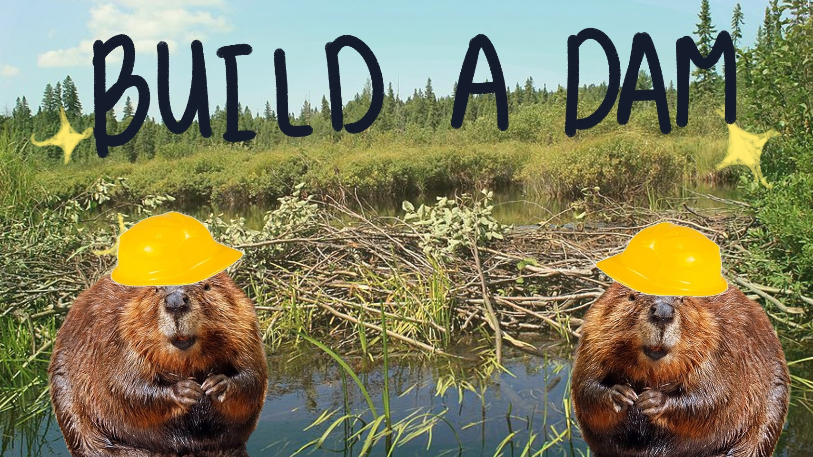

“Let us Build a Dam!” – Leader of Y city
Beaver Times News
Posted at XXX-XXX
During his speech, the leader of Y city, XXX, spoke of his plans on building a dam between the borders of Y city and J city. The dam would be n ft high and would span across the whole boundary. It would be built using the finest wood and a constant patrol in the area by the beaver military would be enforced.
This sparked tension between the 2 cities which worried some citizens.
Some critics claimed that the reason why the leader of Y city desires the construction of the dam is only because of personal reason and no actual factual basis. Although, there are still that insisted that it would benefit the Y city.